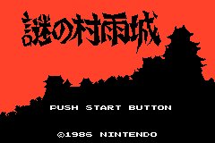

Famicom Mini 22 - Nazo no Murasame Jou (Japan)
EEPROM 64K Save Format Spec gbakit Built-In 💾 MultiBoot
Cartridge Identity
- Game Code
FNMJ(FamilyFNM)- Header Title
MURASAME- Maker / Revision
01/ rev0- ROM Size
- 4.0 MiB (4,194,304 B)
- Save Media
EEPROM 64K- SHA-256
57bc65f88ce383b3ed863cadc9cdfbbd2b6e4e2b06cd00346736c5b0c3d99f98
Screenshots


Link Cable & Multiplayer Communications
This title contains detected communication capabilities: 💾 MultiBoot.
Detailed protocol specifications, SIO registers, Joybus commands, and MultiBoot sequences are documented in the Link & Multiplayer Reference.
- Single-Cart MultiBoot
- Single-Cartridge MultiBoot (Download Play) client/server handler · Thumb SWI 0x25 (
0xDF25):0x00c6b6,0x01dc46,0x024178,0x08ba08
Battery Save Format Specification
Open Full Save Format SpecDownload save-format.json
- Specification Coverage
- 4 mapped fields · 0 verified checksum(s) · Confidence: HIGH
- gbakit Built-In Support
- Built-in (FNMJ)
gbakit save verify FNMJ save.sav
gbakit save decode FNMJ save.sav
gbakit save fix FNMJ damaged.sav -o repaired.savObserved Battery Save Layout
- Fill Byte & Active Size
0x00fill · 512–512 / 8,192 B active (entropy 0.16 bits/B)- Active Offset Ranges
0x0–0x1FF(1 total)- ASCII Magic / Headers
ARUMR- Observed Variable Regions
- 0 bytes across 0 spans: None
- Candidate Checksum/Counter Spans
- None
Asset Map (formatkit.asset-map.v1)
Download FNMJ-r0-57bc65f88ce383b3.asset-map.json.gz (4,036 B (3.9 KiB)) Verified PASS · 0.03% coverage
| Metric | Bytes / Value | Entries |
|---|---|---|
| Identified | 1,440 B (1.4 KiB) (0.03%) | 25 |
| Mapped | 0 B (0.00%) | 0 |
| Opaque | 0 B (0.00%) | 0 |
| Unknown | 4,192,864 B (4.00 MiB) (99.97%) | 25 |
| Total ROM Size | 4,194,304 B (4.00 MiB) | 50 |
| Coverage % | 0.03% | — |
| Entries w/ Code Refs | 24 / 50 (48.00%) | — |
Top Identified Formats: gfx.gba-palette (24 · 1,248 B (1.2 KiB)) · gba.rom-header (1 · 192 B)
Largest unknown Extents (Headerless / Custom Asset Candidates)
| Offset | Size | Shannon Entropy | Code Refs |
|---|---|---|---|
0x00101028 | 1,609,408 B (1.53 MiB) | 7.999 bits/B | 0 |
0x0030D7B0 | 993,360 B (970.1 KiB) | 6.371 bits/B | 0 |
0x000C0D24 | 262,884 B (256.7 KiB) | 8.000 bits/B | 0 |
0x002CF6F0 | 254,112 B (248.2 KiB) | 6.183 bits/B | 0 |
0x002A2B1C | 183,220 B (178.9 KiB) | 5.757 bits/B | 0 |
gzip -dk FNMJ-r0-57bc65f88ce383b3.asset-map.json.gz && gbakit map verify rom.gba FNMJ-r0-57bc65f88ce383b3.asset-map.json
gbakit assets export rom.gba --asset-map FNMJ-r0-57bc65f88ce383b3.asset-map.json -o out/Text, Fonts & Scene Data
- Primary Text Encoding
- Compressed / custom-encoded text
- Font & VWF Indicators
- VWF Width Table No 1bpp Font · BIOS SWIs: BitUnPack
0x10:33· LZ770x11/12:35· Huffman0x13:14· RLE0x14/15:37 - Scene & Packaging
0ROM pointer tables (≥32 entries,0≥200) ·0relativeu32TOCs ·115OAM metasprite hits